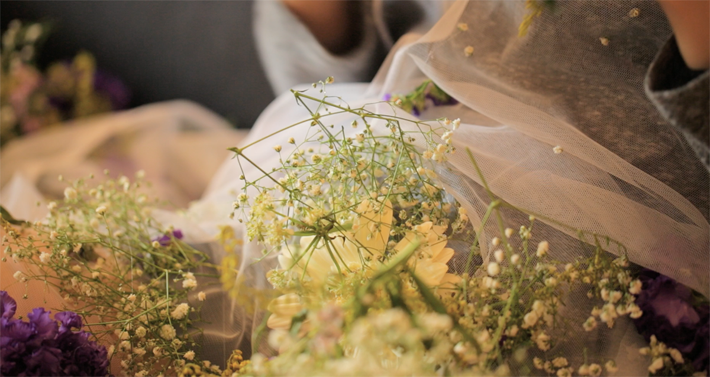

FLOWER
SICKNESS
FORMAT : VIDEO
Promotion film
for original Korean words
individual work
[team project]
Produced by
Ye Jin, CHOI
Ye Jin, CHOI
Ga Eun, JOO
Camera :
Ye Jin, CHOI
Ye Jin, CHOI
Editing :
Ye Jin, CHOI
Ye Jin, CHOI
Sound : Ga Eun, JOO

MOTIVATION
A character and the story was composed based on selected three words.
Selected words :
. 꽃멀미 (Kot-mul-mi) : Dizzy symptoms caused by the beauty and fragrance of flowers
. 비거스렁이 (Bi-geo-su-rung-e): A phenomenon in which wind blows and temperatures drop
after the rain clears up.
. 그루잠 (Gru-jam): Falling asleep again after being awaken
STORY
Daeun(26) who has her first job falls asleep in tension and anxiety, but couldn't sleep well because of dream and rain.The main character is about to go to work tomorrow morning. It's going to be the first day. It's raining outside.
The main character woke up and went back to sleep, but when she saw countless flowers in his dream and felt flower sickness, the flowers died and suddenly changed negatively. She wakes up, and the rain stopped and cold wind blew.